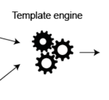

Assignments

Specifications for Assignments 1 & 2
Gomix: Introduction to Gomix

An introduction to the gomix platform + the very basics of the Javascript Language
JS: Variables, Boolean Logic & Objects
Primitive JS types. Making decisions using selection statements. Simple objects.
Gomix: Controllers + Views

Build your first gomix app, a simple static playlist web site.
Gomix: Templates + Routes

Explore templating in more detail. Enhanced the routing behaviour
Gomix: Model View Controller

Explore MVC as implemented in Playlist
Gomix: Gomark Solution
The Assignment one - Gomark - application

Gomix: Sessions

In order to implement user account management, sessions provide a mechanism for identifying specific users
JS: Objects

Review structure of javascript objects - and re-examine the Playlist 4 application in detail.
Gomix: Images

How to build an application that enables a user to upload and display images.